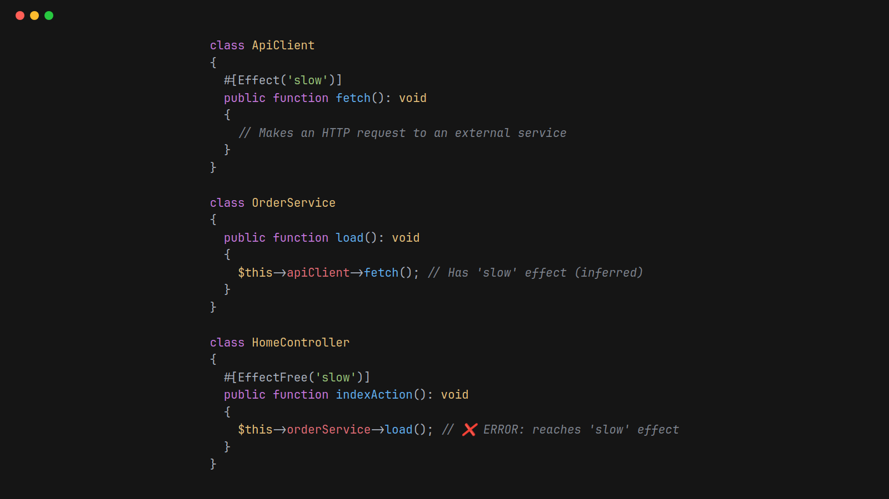

October 9th 2026 open source phpstan effect system phpstan static analysis

During a code review, I spotted a controller that, a few calls down, ended up making a request to an external service.
I caught it that time. But I knew I couldn't rely on myself to spot it the next time.
So I wanted to automate the check: none of my controllers should call code that makes requests to external services.
The catch is that the external call might be several methods away from the controller. A controller calls a service, that service calls another service, and eventually something makes an HTTP request. Looking at the controller alone won't tell you that, which is exactly why it's so easy to miss in code review.
What I wanted was to mark the methods making those requests as slow, then have PHPStan tell me if any controller could reach them.
So I built the PHPStan Effect System.
Consider an application with an API client, an order service and a controller. The controller calls the order service, which calls the API client.
There are two attributes:
#[Effect('slow')] marks a method as having the slow effect.#[EffectFree('slow')] says a method must not reach anything with that effect.Here's what that looks like:
use DaveLiddament\PhpstanEffectSystem\Attributes\Effect;
use DaveLiddament\PhpstanEffectSystem\Attributes\EffectFree;
class ApiClient
{
#[Effect('slow')]
public function fetch(): void
{
// Makes an HTTP request to an external service.
}
}
class OrderService
{
public function __construct(
private ApiClient $apiClient,
) {}
public function load(): void
{
$this->apiClient->fetch();
}
}
class HomeController
{
public function __construct(
private OrderService $orderService,
) {}
#[EffectFree('slow')]
public function indexAction(): void
{
$this->orderService->load();
}
}
PHPStan reports an error on HomeController::indexAction().
It doesn't call the API client directly, but it calls something that does.
The error includes the call path:
Method HomeController::indexAction() is #[EffectFree('slow')] but reaches effect 'slow':
HomeController::indexAction() -> OrderService::load() -> ApiClient::fetch() (declares #[Effect('slow')]).
Notice that OrderService::load() doesn't need an attribute.
The extension works out that it has the slow effect because it calls ApiClient::fetch().
Adding more methods between the controller and the API client doesn't change this. The effect propagates back through the calls, and the error shows a shortest path to the method that declares it.
This is where it really earns its keep: changing existing code. Add an external call to a service today, and you might have just slowed down a controller several calls away. That's exactly the kind of change I spotted in code review. I might not spot the next one. PHPStan will.
Adding #[EffectFree('slow')] to individual methods works, but my original requirement was to apply the rule across all my controllers.
You can do that in PHPStan's configuration:
parameters:
effects:
allowedEffects: ['slow']
rules:
-
classPattern: 'App\Controller\*'
methodPattern: '*Action'
effectFree: ['slow']
This applies the rule to methods ending in Action on classes matching App\Controller\*.
Those methods don't need an #[EffectFree('slow')] attribute as well.
Adjust the patterns to match your application's conventions.
For example, methodPattern: '*' applies it to every method in the matching classes.
The allowedEffects list is required.
It catches typos in effect names, so writing slwo won't quietly create a brand-new effect that nothing ever checks.
A method's parameter and return types tell us what values it accepts and returns. Effects describe what it might do while running, such as accessing a database or making a network request.
The extension lets you name those behaviours, track them through calls, and declare where they aren't allowed.
The names are up to you.
I started with slow, but you could use http for external requests or database-write for methods that change data.
It's worth being clear about what slow means here.
It's just the methods I've chosen to mark as slow.
The extension doesn't measure execution time or magically discover slow code.
It checks whether the effects you've declared can reach the boundaries you've set.
Install the extension with Composer:
composer require --dev dave-liddament/phpstan-effect-system
If you're using phpstan/extension-installer, it registers automatically.
Otherwise, add this to your PHPStan configuration alongside the effect settings above:
includes:
- vendor/dave-liddament/phpstan-effect-system/extension.neon
Run PHPStan over your full configured project paths. The extension needs the project's call graph, so analysing a single file or just the controllers directory isn't enough.
The package is experimental, and there are limits to the calls it can track. For example, variable callables and reflection-based invocation aren't tracked. The README covers these limitations and the other configuration options.
The code and documentation are on GitHub.